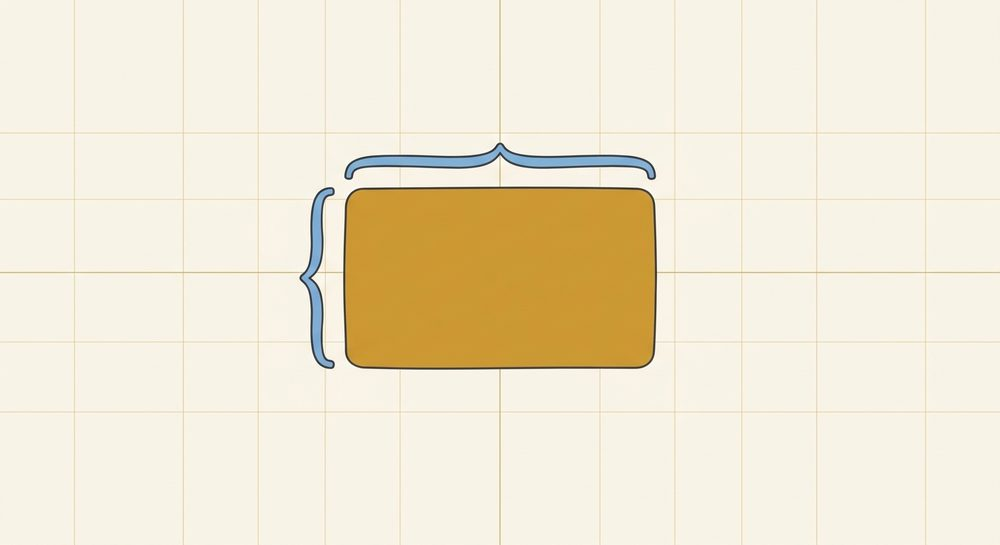

Factoring
GCF, factoring trinomials, special patterns

Prerequisites: Unit 10 (multiplying polynomials — the area box and distribution), the distributive property and combining like terms (Unit 2.3), and comfort with negatives (Unit 1.4 / misconceptions.md §3). By the end, the student can:
- Factor out the greatest common factor (GCF) — numbers and variables — from any polynomial, e.g. 15x³-10x²=5x²(3x-2).
- Factor a trinomial x²+bx+c by finding two numbers that multiply to c and add to b, reasoning correctly about signs.
- Recognize when a trinomial is prime (irreducible over the integers) — no integer pair multiplies to c and adds to b — and say so instead of forcing a factorization.
- Recognize and factor the two special patterns: difference of squares a²-b²=(a+b)(a-b) and perfect-square trinomials a²±2ab+b²=(a±b)².
- Factor completely: always pull the GCF first, then factor what's left, and check each remaining piece for a pattern.
- Check every factorization by multiplying it back out — the central habit of the unit.
Teaching this unit (orientation for the tutor)
The single framing that makes this whole unit click: factoring is multiplying run backward. In Unit 10 the student took factors and built a product (the area box, filled in); here they're handed the finished product and must rebuild the factors (the same area box, but deducing the edges). Keep the reverse-distributing / area-box picture (metaphors.md → Factoring A) live the entire time, and lean on the "common item in every bag" picture for GCF (metaphors.md → Factoring B).
Because factoring is multiplying backward, it comes with a free, built-in answer key: multiply the factors back out and you must land on what you started with. Model this check on every example, no exceptions — it ties straight back to Unit 10, it catches the slips a language model (and a student) will make, and it's the verification habit this course threads through everything (see Unit 2's substitution-check ritual; same spirit). A factorization that doesn't multiply back is simply wrong — say so out loud and re-do it.
The arc: 11.1 pulls a common factor out front (the inverse of single-term distribution); 11.2 reverses the area box for trinomials — this is the load-bearing lesson, because it's the skill that unlocks solving quadratics by factoring in Unit 12 — and teaches the honest endpoint that some trinomials are prime; 11.3 teaches the eye to recognize two patterns so they can be factored on sight.
Scope this unit for the student up front: we factor over the integers. Every factor we write has integer coefficients, so the only legitimate outcomes are a clean integer factorization or the verdict prime (irreducible over the integers). Don't drift into fractions, decimals, square roots, or i as factoring tools, and don't make "over the reals/complex" the working standard — that's Unit 12. This keeps "does it factor?" a question with a definite, checkable answer.
Biggest traps, in order of how often they bite:
- Not pulling the greatest common factor — e.g. 12x+18=2(6x+9), stopping early instead of 6(2x+3). Tell: a common factor still lurks inside the parentheses. (11.1)
- Sign reasoning in trinomials (misconceptions.md §3 negatives, §7 structure). The two numbers' signs are determined by the signs of b and c; getting them backward is the #1 trinomial error. (11.2)
- Forgetting the middle-term check on perfect squares — calling x²+9 or x²+6x+9 something it isn't. Difference of squares needs a minus; a²+b² (a sum of squares) is prime over the integers. (11.3)
- Not recognizing a prime trinomial — exhausting the factor pairs of c with none summing to b, then assuming a mistake instead of concluding prime (irreducible over the integers). The fix is a stopping rule, taught in 11.2. (11.2)
- Combining-unlike-terms relapse when checking by multiplying back (misconceptions.md §7) — watch the expansion step itself.
Pacing: 11.1 is usually quick — use it to cement the "multiply-back" check. Slow down at 11.2 and give it the most time; cover all four sign cases deliberately. 11.3 is pattern-recognition drill — fast once the eye is trained. Interleave Unit 10 throughout: every check is a Unit 10 expansion, so the two units reinforce each other (pedagogy.md → interleaving). Where natural, narrate in function language: "factoring x²+5x+6 finds where the function f(x)=x²+5x+6 will equal zero — that's Unit 12, and it starts here."
Lesson 11.1: Greatest common factor (GCF)
What you'll learn
Find the largest factor (numbers and variables) shared by every term and pull it out front, leaving the rest in parentheses.
GCF is the first thing to try on any factoring problem — pulling it out often shrinks a scary expression into something simple, and it's the inverse of the single-term distribution from Unit 2/10. It also sets up the multiply-back check the rest of the unit depends on.
Scope (state this once, up front): Throughout this unit we factor over the integers — every factor we write has whole-number (integer) coefficients. So "factor x²+5x+6" means "write it as a product of pieces with integer coefficients," and a problem that can't be done with integers is answered honestly as prime (11.2) — not forced. We do not use fractions, decimals, square roots, or complex numbers as a factoring method here; those wait for Unit 12.
New words
- 11.1.d1 Factor (noun): something multiplied. In 6=2·3, both 2 and 3 are factors of 6. In 3(2x+3), the factors are 3 and (2x+3).
- 11.1.d2 Greatest common factor (GCF): the largest factor — biggest number times the most variables — that divides evenly into every term.
- 11.1.d3 Factor (verb): to rewrite a sum as a product, i.e. to undo distributing.
How this builds
- Concrete (common item in every bag, metaphors.md → Factoring B): Each term is a gift bag. If every bag contains a chocolate, you can take one chocolate out of each and set them in a single pile out front. 6x+9: both terms are divisible by 3, so 3 comes out front and what's left of each bag goes inside: 3(2x+3).
-
Pictorial (reverse the area box, visuals.md → area-model): GCF undoes a one-row box. 4x²+8x is the inside of a box whose left edge is 4x: $$\begin{array}{c|c|c} & x & 2 \\ \hline 4x & 4x^2 & 8x \end{array}\qquad\Rightarrow\qquad 4x^2+8x = 4x(x+2)$$
-
Symbolic — find the GCF in two parts: 1. Numbers: the biggest number dividing every coefficient (for 4 and 8, that's 4). 2. Variables: the lowest power of any variable present in every term (for x² and x¹, that's x¹). Multiply them: GCF =4x. Then divide each term by the GCF to get the inside.
Lead Socratically (SKILL.md): "What's the biggest number that divides both 15 and 10? ... And what's the most x's that every term has?" Then always close with the check: "Multiply 5x²(3x-2) back out — do we get 15x³-10x²? Then it's right."
Naming the move honestly: dividing 8x by 4x leaves 2, not 0 — the term doesn't disappear, it gets smaller by the factor we removed. (Heads off the "things vanish by magic" idea, misconceptions.md §1.)
Worked example
(each pulls the GCF, then checks by multiplying back):
Numbers only: $$6x+9 \;=\; 3(2x+3) \qquad \text{Check: } 3\cdot 2x + 3\cdot 3 = 6x+9$$
Number and a variable: $$4x^2+8x \;=\; 4x(x+2) \qquad \text{Check: } 4x\cdot x + 4x\cdot 2 = 4x^2+8x$$
Higher powers — take the lowest power of x: $$15x^3-10x^2 \;=\; 5x^2(3x-2) \qquad \text{Check: } 5x^2\cdot 3x - 5x^2\cdot 2 = 15x^3-10x^2$$ "Both terms have at least x², so x² comes out; gcd(15,10)=5, so 5 comes out — GCF =5x²."
The "stopped too early" trap, done right: $$12x+18 \;=\; 6(2x+3) \qquad \text{Check: } 6\cdot 2x + 6\cdot 3 = 12x+18$$ Note: 2(6x+9) and 3(4x+6) are common factors but not the greatest — the inside still shares a factor. Only 6 leaves an inside (2x+3) with nothing left to pull.
Variable factor with a negative inside: $$10x^2-25x \;=\; 5x(2x-5) \qquad \text{Check: } 5x\cdot 2x - 5x\cdot 5 = 10x^2-25x$$
A common mix-up
- Not pulling the greatest factor — 12x+18=2(6x+9) and stopping. Tell: the parentheses still share a factor. Repair: "Look inside — do 6x and 9 still have something in common? Then we didn't take it all." (misconceptions.md §7)
- Forgetting the variable part — 4x²+8x=4(x²+2x), leaving an x behind. Repair: "Does every bag have at least one x? Then the x comes out too."
- Taking too high a power — 15x³-10x²=5x³(...). Repair: "The second term only has x²; you can't pull an x³ out of it. Take the lowest power present."
- Sign slip on the inside when a term is subtracted — 10x²-25x=5x(2x+5). The multiply-back check catches it instantly.
Figures to use
the one-row LaTeX array area-model box above (visuals.md → area-model) — show the GCF as the left edge and the inside as the top labels. No artifact needed.
Check yourself
- 11.1.c1 "Factor 8x²+12x, then prove it's right without me." (listen for the multiply-back check)
- 11.1.c2 "A student writes 6x+9=3(2x+9). Multiply it back — where did it go wrong?" (3·3=9, so the 9 inside should be 3)
- 11.1.c3 "Why can't you pull x² out of 15x³-10x² as x² and also leave an x in the second term?" (the second term is the x²; nothing's left of it but the coefficient)
Practice
Numbers only:
- 11.1.1 2x+6 2. 5x+15 3. 6x+9 4. 4x-12 5. 8x+20 6. 9x-6
With a variable:
- 11.1.2 x²+7x 8. 3x²+6x 9. 10x²-15x 10. 4x²+8x
Higher powers (take the lowest power):
- 11.1.3 6x³-9x² 12. 14x²+21x 13. 12x³+8x² 14. 18x²-12x
AnswersTry each one yourself first, then open to check.
1) 2(x+3) 2) 5(x+3) 3) 3(2x+3) 4) 4(x-3) 5) 4(2x+5) 6) 3(3x-2) 7) x(x+7) 8) 3x(x+2) 9) 5x(2x-3) 10) 4x(x+2) 11) 3x²(2x-3) 12) 7x(2x+3) 13) 4x²(3x+2) 14) 6x(3x-2)
Lesson 11.2: Factoring trinomials x²+bx+c
What you'll learn
Factor x²+bx+c into (x+m)(x+n) by finding two numbers that multiply to c and add to b — with the signs reasoned, not guessed.
This is the lesson the whole unit builds toward. It's the reverse of the binomial multiplication from Unit 10, and it's the key that unlocks solving quadratics by factoring in Unit 12 — once x²+5x+6=(x+2)(x+3), setting it to zero is one short step away. Invest the most time here.
New words
- 11.2.d1 Trinomial: a polynomial with three unlike terms (after combining like terms), here x²+bx+c — a squared term, an x term, and a constant.
- 11.2.d2 Prime (irreducible over the integers): a trinomial that cannot be written as a product of two binomials with integer coefficients. When the two-number search comes up empty, the trinomial is prime — that's a real answer, not a failure.
- 11.2.d3 Monic: leading coefficient 1, i.e. the x² has no number in front (just x², not 3x²). Every trinomial in this lesson is monic. Trinomials like 2x²+7x+3, where the leading coefficient is not 1, factor by an extension of this method covered later.
How this builds
-
Pictorial (reverse the area box, metaphors.md → Factoring A; visuals.md → area-model): In Unit 10, (x+2)(x+3) filled a box: corners x² and 6, middle cells 2x and 3x that add to 5x. Factoring runs it backward — you're handed the inside and must find the edges: $$\begin{array}{c|c|c} & x & \,? \\ \hline x & x^2 & ?x \\ \hline ? & ?x & 6 \end{array}$$ The two unknown edges must multiply to 6 (the corner) and their x-terms must add to 5x (the middle). That's exactly the question: "What two numbers multiply to c and add to b?"
-
Symbolic — the two-number search: List factor pairs of c; pick the pair that adds to b. For x²+5x+6: pairs of 6 are 1·6 and 2·3; only 2+3=5. So (x+2)(x+3).
- Sign reasoning (the heart of the lesson) — read the signs of c and b:
- c>0: the two numbers have the same sign (their product is positive). Then b tells you which: b>0 ⇒ both positive; b<0 ⇒ both negative.
- c<0: the two numbers have opposite signs (their product is negative). The one with the larger absolute value carries the sign of b.
| signs | c | b | the two numbers | example |
|---|---|---|---|---|
| both + | + | + | both positive | x^2+5x+6=(x+2)(x+3) |
| both - | + | - | both negative | x^2-5x+6=(x-2)(x-3) |
| opposite, sum + | - | + | bigger one positive | x^2+x-6=(x+3)(x-2) |
| opposite, sum - | - | - | bigger one negative | x^2-x-6=(x-3)(x+2) |
Lead Socratically: "We need two numbers. Their product is c=6 — same sign or opposite? Their sum is b=5. Which pair fits?" Then check by multiplying back every time (this is also a Unit 10 rep).
Worked example
(covering all sign cases; each checked by expanding back):
Both positive (c>0, b>0): $$x^2+5x+6=(x+2)(x+3) \qquad \text{Check: } x^2+3x+2x+6 = x^2+5x+6$$ (2·3=6, 2+3=5.)
Both negative (c>0, b<0): $$x^2-5x+6=(x-2)(x-3) \qquad \text{Check: } x^2-3x-2x+6 = x^2-5x+6$$ (c positive ⇒ same sign; b negative ⇒ both negative. (-2)(-3)=6, (-2)+(-3)=-5.)
Opposite signs, sum positive (c<0, b>0): $$x^2+x-6=(x+3)(x-2) \qquad \text{Check: } x^2-2x+3x-6 = x^2+x-6$$ (c negative ⇒ opposite signs; need product -6, sum +1: +3 and -2.)
Opposite signs, sum negative (c<0, b<0): $$x^2-x-6=(x-3)(x+2) \qquad \text{Check: } x^2+2x-3x-6 = x^2-x-6$$ (Opposite signs; product -6, sum -1: the bigger number 3 is negative.)
A bigger both-positive one: $$x^2+7x+12=(x+3)(x+4) \qquad \text{Check: } x^2+4x+3x+12 = x^2+7x+12$$ (Pairs of 12: 1·12, 2·6, 3·4; only 3+4=7.)
Opposite signs, larger gap: $$x^2-2x-15=(x-5)(x+3) \qquad \text{Check: } x^2+3x-5x-15 = x^2-2x-15$$ (Product -15, sum -2: -5 and +3; the bigger, 5, is negative because b<0.)
When nothing fits: prime (irreducible) trinomials — the stopping rule.
Not every trinomial factors over the integers. The two-number search has a finite list to check — the factor pairs of c — so it can genuinely run out. When it does, the trinomial is prime, and "prime" is the correct, complete answer. The rule:
Stopping rule. To factor x²+bx+c, list every integer pair that multiplies to c, then check each pair's sum against b. If no pair sums to b, stop: the trinomial is prime (irreducible over the integers). Exhausting the finite pair list is the proof — it's the same "I checked it" ethos as the multiply-back habit, applied to the search itself.
Worked example — a prime one (c>0, b>0): $$x^2+2x+5 \;\Rightarrow\; \text{prime (irreducible over the integers)}$$ c=5>0, so the two numbers would have the same sign, and b>0 forces both positive. The only positive pair multiplying to 5 is 1·5, which sums to 6, not 2. No other pair exists. Search exhausted ⇒ prime. (There is no integer factorization to multiply back — and that's the answer.)
Worked example — another prime one: $$x^2+x+1 \;\Rightarrow\; \text{prime (irreducible over the integers)}$$ c=1, b=1. The only integer pair multiplying to 1 is 1·1 (sum 2) or (-1)(-1) (sum -2); neither sums to 1. List exhausted ⇒ prime.
A few honest cautions for the tutor:
- "Prime" ≠ "I gave up." It means the finite search was completed and came up empty. Have the student actually list the pairs and read off the sums, so primality is shown, not asserted.
- Don't reach for non-integers. A learner might notice x²+5x+9 "almost" works and try fractions or decimals — hold the line: over the integers it's prime, full stop. Other tools (the quadratic formula, the discriminant) come in Unit 12.
- GCF can hide a prime. 2x²+4x+10 is not prime as written — pull the 2 first: 2(x²+2x+5), and then the inside (x²+2x+5) is prime. So "factor completely" here means 2(x²+2x+5), GCF out front, prime factor left intact.
A common mix-up
- Sign reasoning backward (misconceptions.md §3) — e.g. writing x²-5x+6=(x+2)(x+3) (forgot both must be negative) or x²+x-6=(x-3)(x+2) (put the sign on the wrong number). Tell: the multiply-back gives the wrong middle term. Repair: "Is c positive or negative? Same sign or opposite? Now which sign does b force?"
- Product/sum swapped — finding numbers that add to c and multiply to b. Repair: "Which one is the constant on its own — that's the product target."
- Skipping the GCF first — if every term shares a factor (e.g. 2x²+10x+12), pull it out before hunting the pair. Strategy choice, stated as a rule: always try the GCF before the two-number search. Pulling 2 from 2x²+10x+12 leaves 2(x²+5x+6), and the small monic inside is far easier to factor than the original — and it also keeps you from wrongly calling something prime (see the prime cautions above). A worked GCF-first example lives at the end of 11.3.
- Declaring "prime" too soon — quitting after one or two pairs instead of all of them, or forgetting the negative pairs when c>0 and b<0. Repair: "List every pair, including negatives where the signs call for it; only an exhausted list earns the word prime." (misconceptions.md §7)
- No middle-term check — accepting (x+2)(x+3) for x²+6x+6 without expanding. Repair: always multiply back; the middle term is where errors surface (misconceptions.md §7). (And note: x²+6x+6 is in fact prime — no integer pair multiplies to 6 and adds to 6.)
Figures to use
the 2×2 LaTeX array area-model box (visuals.md → area-model), filled in backward — write the known corners (x² and c) and let the student deduce the edges. Especially useful for a stuck student.
Check yourself
- 11.2.c1 "Factor x²+8x+15, and tell me why both numbers are positive." (because c>0 and b>0)
- 11.2.c2 "What changes between x²+2x-8 and x²-2x-8? Factor both." (the sign of b flips which number is negative)
- 11.2.c3 "A student says x²-7x+12=(x+3)(x+4). Multiply it back — what's wrong, and what's the fix?" (gives +7x; both factors should be negative: (x-3)(x-4))
- 11.2.c4 "Is x²+3x+5 factorable over the integers? List the pairs out loud and decide." (pairs of 5: 1·5 sums to 6 — that's the only one; no pair sums to 3 ⇒ prime)
Practice
Both positive (c>0, b>0):
- 11.2.1 x²+5x+6 2. x²+7x+10 3. x²+8x+15 4. x²+9x+20
Both negative (c>0, b<0):
- 11.2.2 x²-5x+6 6. x²-7x+12 7. x²-8x+15 8. x²-6x+8
Opposite signs, sum positive (c<0, b>0):
- 11.2.3 x²+x-6 10. x²+2x-8 11. x²+3x-10
Opposite signs, sum negative (c<0, b<0):
- 11.2.4 x²-x-6 13. x²-2x-15 14. x²-4x-12
Factorable or prime? (decide for each — some don't factor over the integers):
- 11.2.5 x²+10x+21 16. x²+x+1 17. x²-x-12 18. x²+2x+5 19. x²+4x+3 20. x²+3x+5 21. x²-9x+18 22. x²-3x+10
AnswersTry each one yourself first, then open to check.
1) (x+2)(x+3) 2) (x+2)(x+5) 3) (x+3)(x+5) 4) (x+4)(x+5) 5) (x-2)(x-3) 6) (x-3)(x-4) 7) (x-3)(x-5) 8) (x-2)(x-4) 9) (x+3)(x-2) 10) (x+4)(x-2) 11) (x+5)(x-2) 12) (x-3)(x+2) 13) (x-5)(x+3) 14) (x-6)(x+2) 15) (x+3)(x+7) 16) prime (irreducible over the integers) 17) (x-4)(x+3) 18) prime (irreducible over the integers) 19) (x+1)(x+3) 20) prime (irreducible over the integers) 21) (x-3)(x-6) 22) prime (irreducible over the integers)
Sign spot-checks: #5: (-2)(-3)=6, (-2)+(-3)=-5. #11: (+5)(-2)=-10, 5+(-2)=+3. #14: (-6)(+2)=-12, -6+2=-4. Prime spot-checks (show the search is exhausted): #16 pairs of 1: 1+1=2, (-1)+(-1)=-2 — neither is 1. #18 pairs of 5: 1+5=6 — not 2. #20 pairs of 5: 1+5=6 — not 3. #22 c=10, b=-3 needs a negative pair: -1-10=-11, -2-5=-7 — neither is -3.
Lesson 11.3: Special patterns
What you'll learn
Recognize two patterns on sight and factor them instantly: difference of squares a²-b²=(a+b)(a-b) and perfect-square trinomials a²±2ab+b²=(a±b)².
These show up constantly (and again in Unit 12). Spotting them saves the whole two-number search — and knowing a²+b² (a sum of squares) does not factor over the integers keeps the student from chasing a factorization that isn't there.
New words
How this builds
Difference of squares — derive it, don't just state it. Multiply (a+b)(a-b) with the area box (Unit 10): the middle terms +ab and -ab add to zero, leaving a²-b²: $$\begin{array}{c|c|c} & a & -b \\ \hline a & a^2 & -ab \\ \hline b & ab & -b^2 \end{array}\qquad\Rightarrow\qquad a^2 - ab + ab - b^2 = a^2-b^2$$ Run it backward to factor. Recognizing it: two perfect squares with a minus between them. Then a=√first, b=√last, and it splits into (a+b)(a-b). $$x^2-9=(x)^2-(3)^2=(x+3)(x-3)$$ Note — a sum of squares is prime. x²+9 (a plus) does not factor over the integers: difference of squares needs the minus. Make it concrete with the unit's own multiply-back move — tempted by (x+3)(x-3)? Multiply it back: x²-9, a minus — so that product factors x²-9, never x²+9. Specializing the two-number search says the same thing: you'd need two numbers multiplying to +9 and adding to 0, and no integer pair does that. (For this unit — and all of Algebra 1 — "factor" means over the integers.)
Perfect-square trinomials — these are (x+k)² expanded: (x+3)²=x²+6x+9. Recognizing one: the first and last terms are perfect squares, and the middle term equals 2·√first·√last. For x²+6x+9: √(x²)=x, √9=3, and 2·x·3=6x — matches, so it's (x+3)². The middle sign becomes the sign inside: x²-10x+25=(x-5)².
These are really special cases of Lesson 11.2 (the two numbers are equal for a perfect square; opposite for difference of squares), so the multiply-back check is identical — and still mandatory.
Lead Socratically: "Are both ends perfect squares? Is there a minus between them, or a middle term? ... If a middle term, does it equal twice the roots multiplied?" Then check by expanding.
Worked example
(each checked by multiplying back):
Difference of squares — basic: $$x^2-9=(x+3)(x-3) \qquad \text{Check: } x^2-3x+3x-9 = x^2-9$$
Difference of squares — larger: $$x^2-25=(x+5)(x-5) \qquad \text{Check: } x^2-5x+5x-25 = x^2-25$$
Difference of squares with a coefficient (4x²=(2x)²): $$4x^2-1=(2x+1)(2x-1) \qquad \text{Check: } 4x^2-2x+2x-1 = 4x^2-1$$
Perfect-square trinomial (plus): $$x^2+6x+9=(x+3)^2 \qquad \text{Check: } (x+3)(x+3)=x^2+3x+3x+9 = x^2+6x+9$$ (√(x²)=x, √9=3, 2·x·3=6x.)
Perfect-square trinomial (minus): $$x^2-10x+25=(x-5)^2 \qquad \text{Check: } (x-5)(x-5)=x^2-5x-5x+25 = x^2-10x+25$$ (√(x²)=x, √25=5, 2·x·5=10x; minus ⇒ (x-5)².)
Putting it together: GCF first, then the pattern (factor completely).
The biggest gain from "always try the GCF first" (11.1) shows up here: pulling a common factor can turn a messy expression into a clean pattern, and forgetting to keep that GCF in the final answer is the classic "not fully factored" slip. Two strategy-choice models, each done end-to-end:
GCF, then a perfect square: $$2x^2+12x+18 \;=\; 2(x^2+6x+9) \;=\; 2(x+3)^2 \qquad \text{Check: } 2(x^2+6x+9)=2x^2+12x+18$$ Pull the 2 (every coefficient is even); the inside x²+6x+9 is now a perfect square (√(x²)=x, √9=3, 2·x·3=6x). The 2 stays out front — 2(x+3)² is fully factored; (x+3)² alone would be wrong.
GCF, then a difference of squares: $$3x^2-12 \;=\; 3(x^2-4) \;=\; 3(x+2)(x-2) \qquad \text{Check: } 3(x+2)(x-2)=3(x^2-4)=3x^2-12$$ Pulling 3 exposes x²-4, a difference of squares. Note neither step was visible before the GCF came out — that's why GCF goes first.
Factor completely — the endpoint. A factorization is finished only when no piece can be factored again. After each split, ask of every factor: can this one be factored? (a leftover difference of squares, a trinomial that still factors, a GCF you missed). Stop only when each piece is either a single term, a prime trinomial, or an irreducible binomial.
A common mix-up
- Trying to factor a²+b² — e.g. "x²+9=(x+3)(x-3)?" No: that multiplies back to x²-9. A sum of squares doesn't factor over the integers; it's prime. Repair: "Multiply your answer back — do you get a plus or a minus?"
- Mistaking a near-miss for a perfect square — x²+5x+9 has square ends but 2·x·3=6x≠5x, so it is not (x+3)². Repair: "Check the middle: does it equal twice the roots multiplied? If not, fall back to the 11.2 two-number search — and here that search comes up empty, so x²+5x+9 is prime (pairs of 9: 1+9=10, 3+3=6 — neither is 5)."
- Dropping the coefficient's square root — 4x²-1=(4x+1)(4x-1). Repair: "√(4x²) is 2x, not 4x — multiply back to see." (misconceptions.md §3/§7)
- Sign of the middle ignored in a perfect square — calling x²-10x+25 a (x+5)². The middle sign carries inside.
Figures to use
the difference-of-squares area box above (visuals.md → area-model) — the cancelling middle cells make the pattern visible. No artifact needed.
Check yourself
- 11.3.c1 "Is x²-16 a difference of squares? Factor it, then multiply back to prove it." ((x+4)(x-4))
- 11.3.c2 "Can x²+16 be factored the same way? Why or why not?" (no — a sum of squares is prime over the integers; (x+4)(x-4) would give x²-16, a minus)
- 11.3.c3 "How do you tell x²+6x+9 (a perfect square) from x²+6x+8 (not one)? Factor each." ((x+3)² vs. (x+2)(x+4) — check the middle against twice the roots)
Practice
Difference of squares:
- 11.3.1 x²-9 2. x²-16 3. x²-25 4. x²-49 5. x²-1 6. 4x²-9 7. 9x²-1
Perfect-square trinomials:
- 11.3.2 x²+6x+9 9. x²-10x+25 10. x²+8x+16 11. x²-4x+4 12. x²+2x+1
GCF first, then factor completely (each needs a common factor pulled before the pattern shows):
- 11.3.3 2x²+12x+18 14. 3x²-12 15. 2x²+10x+12
AnswersTry each one yourself first, then open to check.
1) (x+3)(x-3) 2) (x+4)(x-4) 3) (x+5)(x-5) 4) (x+7)(x-7) 5) (x+1)(x-1) 6) (2x+3)(2x-3) 7) (3x+1)(3x-1) 8) (x+3)² 9) (x-5)² 10) (x+4)² 11) (x-2)² 12) (x+1)² 13) 2(x+3)² 14) 3(x+2)(x-2) 15) 2(x+2)(x+3)
Spot-checks: #6: (2x+3)(2x-3)=4x²-9. #10: 2·x·4=8x, so (x+4)². #11: middle -4x=2·x·(-2), so (x-2)². #13: 2(x+3)²=2(x²+6x+9)=2x²+12x+18 (keep the 2!). #14: 3(x²-4)=3x²-12.
Wrap-up & interleaving
Putting it together
The student should leave with a reliable order of attack (this is the strategy-choice skill — knowing which tool to reach for, not just how to use each):
- GCF first — always. Pull any common factor before anything else (11.1). It often turns a messy expression into a clean pattern, and skipping it is the #1 source of "not fully factored" and false "prime" calls.
- Count the terms. - Two terms → look for a difference of squares (a²-b², a minus). A sum of squares (a²+b²) is prime — don't force it. - Three terms → first glance for a perfect-square trinomial (square ends, middle = 2·√first·√last); if it's that, factor on sight. Otherwise run the two-number search (multiply to c, add to b). If no integer pair works, the trinomial is prime (irreducible over the integers) — say so and stop (11.2).
- Factor completely. After each split, ask of every piece: can this be factored again? (a leftover difference of squares, a trinomial that still factors, a GCF you missed). Stop only when each factor is a single term, an irreducible binomial, or a prime trinomial.
- Multiply back to check — every time. A factorization that doesn't expand to the original is wrong; and remember a prime answer has nothing to multiply back — the exhausted pair list is its proof.
The unifying idea: factoring is multiplying backward, so Unit 10 is the answer key. That makes the check feel natural, not like extra work.
Mix back in
- Every multiply-back check is a Unit 10 expansion — keep both skills sharp by alternating "factor this" with "now expand it back."
- Re-run the sign-reasoning of 11.2 inside 11.3 problems (it's the same logic specialized).
- Warm up sessions with a quick GCF pull or a one-line trinomial before new material.
- Function-language bridge to Unit 12: "We just factored x²+5x+6 into (x+2)(x+3). Next unit, setting f(x)=0 and reading off x=-2, -3 is one step away — you've already done the hard part."
Progress card
- Which lessons are mastered (e.g. "11.1–11.2 solid").
- Whether the multiply-back check is automatic yet.
- Any lingering sign trap in trinomials, stopping short of the greatest common factor, or mis-recognizing a special pattern (especially attempting a²+b²).
- Whether prime trinomials are recognized confidently — the student lists the pairs and concludes prime, rather than assuming an error — and whether they factor completely (GCF kept in the answer, each piece re-checked).
- Tone/detail preference.
Example:
ALGEBRA PROGRESS CARD
Unit/Lesson: 11.2 — Factoring trinomials
Mastered: 11.1 (GCF); multiply-back check is automatic
Watch for: sign reasoning when c < 0 (which number gets the minus)
Last problem: x^2 - 2x - 15 → (x-5)(x+3)
Next up: finish 11.2, then 11.3 (special patterns) — sets up Unit 12
Tone preference: medium detail